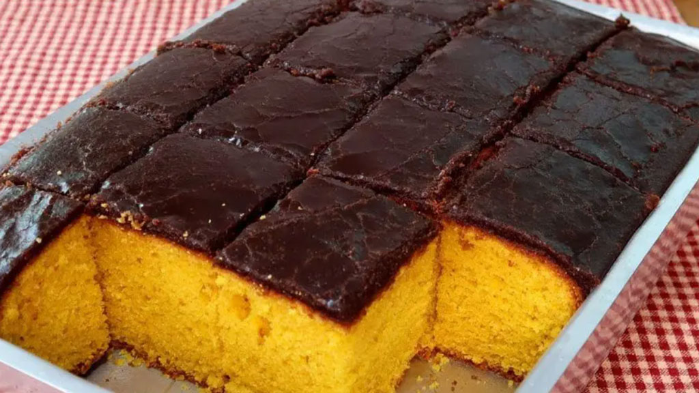
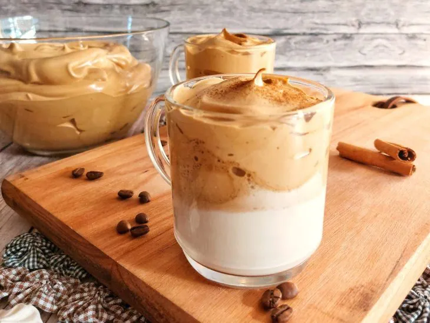

Introdução
Seja muito bem-vindo ao site das melhores receitas! Hoje vamos apender a fazer 5 receitas fáceis para fazer no dia a dia.
Traremos receitas doces e salgadas para você aproveitar e se divertir enquanto cozinha! Abaixo terá as 5 receitas!
Bolo de Chocolate

É difícil encontrar alguém que não seja fã de bolo de chocolate, não é mesmo? Um pedaço dele pode deixar sua tarde muito mais gostosa. Melhor ainda se o preparo for rápido e o resultado, um doce muito delicioso.
Receita do bolo de chocolateBolo de Cenoura de liquidificador
Bolo de cenoura é um clássico, e o melhor é que a receita é muito simples de fazer. Aqui, você prepara a massa com o auxílio do liquidificador e finaliza o doce com uma deliciosa calda de achocolatado, manteiga, leite e açúcar.
Caso vocÊ queira conhecer melhor e acessar a receita deste bolo muito bom e bem simples seu modo de fazer! Clique no botão abaixo:
Receita do Bolo de CenouraPão de minuto recheado
Para quem quer uma versão mais elaborada, a dica é apostar nessa receita em que a massa é recheda com queijo e presunto. Antes de assar os pães, pincele gema e salpique orégano para um resultado bem apetitoso.
Receita do Pão recheadoPastelzinho de carne fácil

Este Pastel de Carne Rápido traz todo o sabor e a praticidade que você deseja para o seu dia a dia. Veja como comer um pastel melhor do que o de feira!
Para acessar a receita do Pastelzinho, clique no link abaixo:
Receita de Pastelzinho de carneCafé Cremoso
Para quem é fã de café, não pode deixar de provar essa receita. Uma versão cremosa para adicionar o leite. Vale a pena experimentar!
Para acessar a receita desse café gostoso, fácil e rápido. Clique no link abaixo:
Receita do Café Cremoso